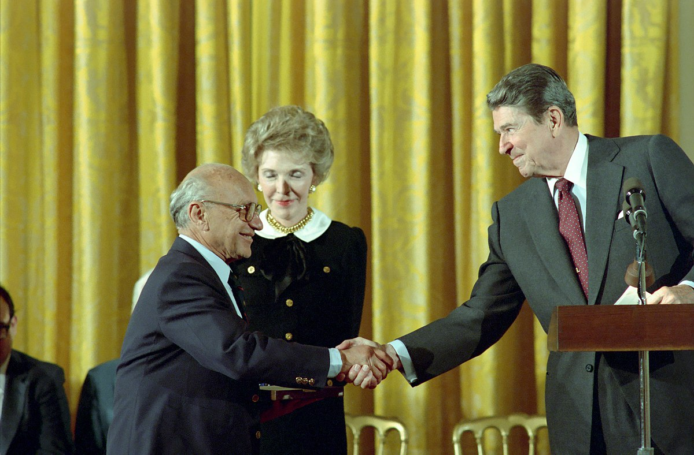

Milton Friedman
Positions de politique publique
Réserve fédérale et politique monétaire
Bien que Friedman ait conclu que le gouvernement a un rôle dans le système monétaire, il était critique de la Réserve fédérale en raison de sa mauvaise performance et a estimé qu'elle devrait être abolie. Il était opposé aux politiques de la Réserve fédérale, même pendant le soi-disant «choc Volcker» qui a été étiqueté «monétariste». Friedman pensait que le système de la Réserve fédérale devrait finalement être remplacé par un Programme d'ordinateur. Il était favorable à un système qui achèterait et vendrait automatiquement des titres en réponse aux changements dans la masse monétaire.
La proposition d'augmenter constamment la masse monétaire à un certain montant prédéterminé chaque année est devenue connu sous le nom de règle de k pour cent de Friedman. Il y a débat sur l'efficacité d'une monnaie théorique régime de ciblage de l'offre. L'incapacité de la Fed à atteindre ses objectifs de masse monétaire de 1978 à 1982 a a conduit certains à conclure que ce n'était pas une alternative réalisable à l'inflation et aux taux d'intérêt plus conventionnels ciblage. Vers la fin de sa vie, Friedman a exprimé des doutes quant à la validité du ciblage du quantité d'argent.
Idéalement, Friedman était en fait favorable aux principes du plan de Chicago des années 1930, qui auraient a mis fin à la banque de réserves fractionnaires et, par conséquent, à la création de monnaie privée. Cela obligerait les banques à avoir 100% les réserves soutiennent les dépôts et placent plutôt les pouvoirs de création monétaire uniquement entre les mains des États-Unis. Gouvernement. Cela rendrait plus possible le ciblage de la croissance monétaire, car la monnaie endogène créée par le prêt de réserves fractionnaires ne serait plus un problème majeur.
Taux de change
Friedman était un ardent défenseur des taux de change flottants tout au long de la période de Bretton-Woods. Il a fait valoir qu'un taux de change flexible permettrait un ajustement extérieur et permettrait aux pays de éviter les crises de balance des paiements. Il considérait les taux de change fixes comme une forme indésirable de gouvernement intervention. Le cas a été articulé dans un article influent de 1953, "The Case for Flexible Exchange "À une époque où la plupart des commentateurs considéraient la possibilité de taux de change flottants comme fantaisie.
Choix de l'école
Dans son article de 1955 "Le rôle du gouvernement dans l'éducation", Friedman a proposé de compléter publiquement exploitait des écoles avec des écoles privées mais financées par l'État grâce à un système de bons scolaires. Des réformes similaires à celles proposées dans l'article ont été mises en œuvre, par exemple, au Chili en 1981 et Suède en 1992. En 1996, Friedman et sa femme ont fondé la Friedman Foundation for Choix éducatif pour préconiser le choix de l'école et les bons. En 2016, la Fondation Friedman a changé son nom à EdChoice pour honorer le désir des Friedman de faire vivre le mouvement des choix éducatifs sans leurs noms y sont attachés après leur mort.
Le libertarisme et le parti républicain
Friedman était conseiller économique et rédacteur de discours dans la campagne présidentielle de Barry Goldwater en 1964. Il était conseiller du gouverneur de Californie Ronald Reagan et était actif dans la présidentielle de Reagan campagnes. Il a été membre du Conseil consultatif de politique économique du président Reagan à partir de 1981. En 1988, il a reçu la Médaille présidentielle de la liberté et la Médaille nationale des sciences. Il a dit qu'il était un libertaire philosophiquement, mais un membre du Parti républicain américain pour le bien de «opportunité» («Je suis un libertaire avec un petit« l »et un républicain avec un« R. »majuscule et je suis un Républicain avec un «R» majuscule pour des raisons d'opportunité, pas par principe. ") Mais, il a dit:" Je pense que le Le terme libéral classique est également applicable. Je me fiche pas mal de ce que je m'appelle. je suis beaucoup plus intéressé à faire réfléchir les gens aux idées plutôt qu'à la personne. "
Friedman reçoit la Médaille présidentielle de la liberté de Ronald Reagan
Liberté économique
Michael Walker du Fraser Institute et Friedman ont organisé une série de conférences de 1986 à 1994. L'objectif était de créer une définition claire de la liberté économique et une méthode pour la mesurer. Finalement cela a abouti au premier rapport sur la liberté économique mondiale, La liberté économique dans le monde. Ce rapport annuel a depuis fourni des données pour de nombreuses études évaluées par des pairs et a influencé les politiques dans plusieurs pays.
Avec seize autres économistes éminents, il s'est opposé au Copyright Term Extension Act, et signé un mémoire d'amicus déposé dans Eldred c. Ashcroft. Friedman l'a décrit en plaisantant comme "aucune évidence".